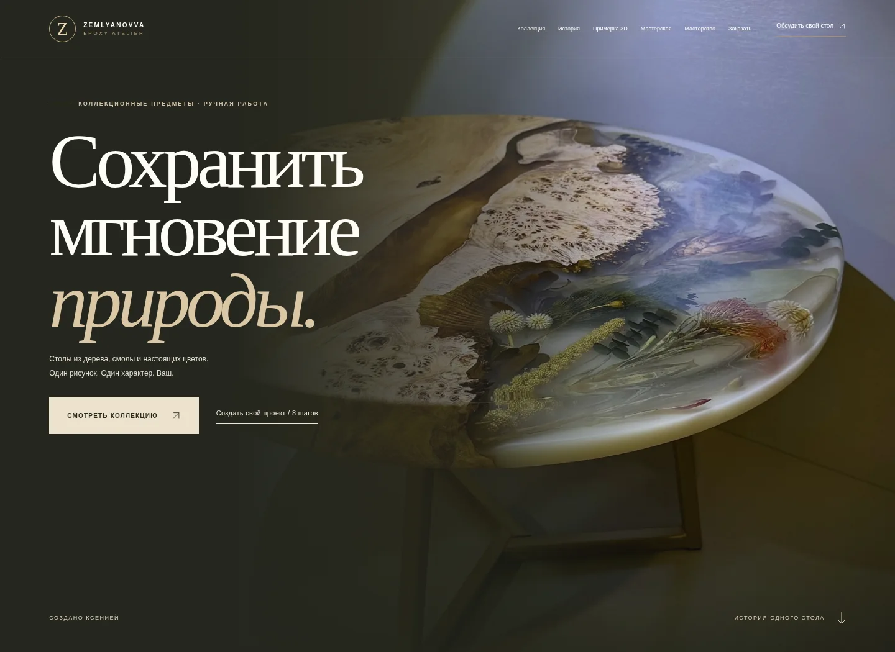

Device Workshop
Каталог услуг по ремонту техники, цены, личный кабинет и связь с мастером.
Сайт мастерской Тиграна Открыть в Telegram@DeviceWorkshop_botЗдесь — проекты с описанием задачи и выполненной работы. В каждом проекте указаны мой вклад и границы подтверждённых результатов.
Каталог услуг по ремонту техники, цены, личный кабинет и связь с мастером.
Сайт мастерской Тиграна Открыть в Telegram@DeviceWorkshop_botКоллекция мастерской, 3D-конструктор, примерка предметов в комнате и связь с Ксенией.
древесный-замысел.рф Открыть в Telegram@Drevesny3D_BotРаботы по сварке и металлу, 3D-конструктор, примерка через камеру и подготовка заявки для отправки мастеру.
Открыть в Telegram@AikBaseOrder_BotСайт авторских столов из натурального дерева и эпоксидной смолы. Визуальная подача материалов и работ, знакомство с мастерской и переход к обсуждению заказа.

Представить работы Ксении в индивидуальном стиле и помочь посетителю познакомиться с изделиями и связаться с автором.
Разработан сайт с выразительным первым экраном, коллекцией работ, галереей и разделом обсуждения проекта. Авторство разработки подтверждено Трофимом.
HTML, CSS и JavaScript. В исходниках предусмотрены интерактивная галерея и подключение формы Битрикс24; отправка заявок в рамках этого разбора не проверялась.
Подготовлен сайт с отдельным публичным адресом. Скриншот сделан из локальной копии исходников; внешний адрес в этой среде недоступен. Показатели заявок и продаж не оценивались.
Помощь проекту в оформлении цифровых площадок, подготовке публикаций и настройке рабочих инструментов.
Схема участия автора, а не скриншот интерфейса или подтверждение коммерческих результатов.
Организовать присутствие проекта на нескольких площадках и поддерживать публикацию контента.
Оформление площадок и создание постов, публикации во ВКонтакте и MAX, настройка карт, помощь в создании сайта и настройке Битрикс. Роль — участие и помощь, а не единоличная разработка всей системы.
Telegram, ВКонтакте, MAX, карты, сайт и Битрикс. Конкретная версия Битрикс и архитектура сайта не уточнялись.
Описан фактический вклад в оформление, контент и настройку. Данных об охватах, заявках и продажах нет; рост показателей не заявляется.
Собственный сайт — пример того, как я использую искусственный интеллект для создания и постепенного развития цифрового проекта.

Объяснить несколько направлений работы без перегруженного первого экрана и дать посетителю ясные ориентиры по стоимости.
С помощью AI-агента созданы структура, дизайн, страницы, статьи и мобильная навигация. Изменения проверялись в браузере. Содержание и оформление постепенно дополняются.
AI-агент Codex, HTML, CSS, JavaScript и генератор на Python без внешних зависимостей.
Реализован многостраничный сайт. Коммерческие показатели и результаты привлечения клиентов пока не измерялись.
Вы увидите мой подход и конкретный результат, прежде чем решать, нужен ли вам следующий этап.
Что можно обсудить:
Объём, срок, стоимость и критерии результата согласуем индивидуально до начала работы. Заявка — это предложение обсудить задачу, а не автоматический запуск работ.
После согласованного этапа вы решаете, продолжать ли сотрудничество. Заказывать полный проект или следующий этап необязательно.
Можно обсудить оформление результата как кейса для моего портфолио. Публикацию, конкретные материалы, имя и данные согласуем отдельно после работы. Можно работать без публикации.